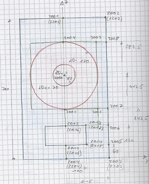

Nodes and Elements
| Home |
 |
 |
 |
 |
The Boundary Element Analysis make extensive use of geometrical data. AKABAK has two different schema to provide geometric information for points, lines and planes:
- Nodes and Elements
- CAD drafts via Mesh-files
Nodes and Elements could be regarded as a primitive CAD-system. It turns out to be an elegant schema in order to provide simple geometry in a manageable form. The schema always consists of two related sections:
- Nodes
- Elements or Fields
- Positions and Directions
Nodes
Nodes is a list of coordinates. Each list should have a unique name ("N1" in the example to the right).
Each record of the list creates a point in space, and has a unique name in form of an integer (for exampel "1001").
Coordinates can be edited with the help of dialog Nodes. The home of Nodes-sections is page General of the Desktop. There can be as many Nodes-sections as you like.
Elements and Field
Elements form the planes of the acoustic boundaries. Planes for Fields are working in a similar way. The individual planes are assumed to be flat and can have three, four or more vertices, ie triangles, quadrilaturals or polygons. A polygon can be concave or convex, however its edges should not cross.
Planes are organized in lists. Elements for boundaries are stored on page "BEM" of the desktop. Planes of Fields should be on page "Observation".
Each line represents one plane. The first column is the index or "name" of the plane.
It follows the array of node-names as given by the referenced Nodes-section. The numbers should be separated by blanks. If there are three numbers a triangle is created. Four entries yield a quadrilateral. More entries create a polygon, for example
1001 1002 1003 1004 1005 1006 1007 1008
for convenience it is also possible to type it in the form
1001 .. 1008
If Dimension = CircSym then the boundaries are the surface of a truncated cone. Here the "vertices" are at the edges of this cone. Hence there would be only two entries.
If Dimension = 2D then the element is an infinite plane seen edge-on. We need two points, which specify the line-segment.
For Boundary Elements the order of node-indices matter as explained in Normal and Volumes. The normal can be mirrored by inverting the order of specification. For convenience the forms provide a button called Swap Normals which mirrors the normal of all selected planes.
If you enter Nodes and Elements manually it is of advantage to make first a sketch of the structure.
Best is to type all nodes first. In AKABAK you can check section Nodes in the treeview which displays the nodes as little dots.
In a second step you are going to specify all planes of Elements or Fields.
